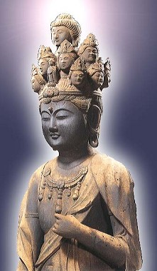
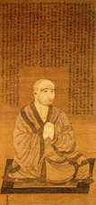
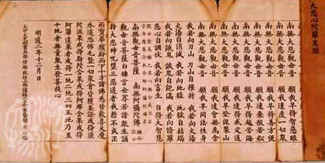
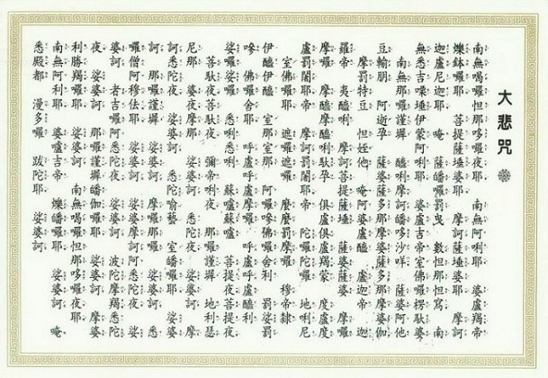

大悲咒的译文
冯冯
有人剪报寄来，是一份旧报，一九九九年四月九日的“明报”，第Ｉ３页，登有一篇文章：题名“大悲咒与我的释文”，作者是一位知名的现代诗人，寄件者叫我发表意见。
该原文与“后记”，现在影印附此上网，请读者自行欣赏，我相信各人自有各种见仁见智，我不必对该文表示任何批评。
一般人认为大悲咒向无译文，有音无义，那可能是未予深察，其实大悲咒自古已有译文，现代佛学家亦有好几家译文，我就记忆所及，见过的现代译文就有三种，一种是瑞士佛学家与汉学家苏慈博士的英文德文译本，一种是台湾佛 学家郑振煌教授的中译本，另一是香港佛学家高永霄教授的中译本与注解。上述剪报的文章作者，可能未留意或从未接触过这些现代译本。
该文作者显然不是佛教徒，自然也不知道大悲咒自古以来的汉译本也有三种之多。我见过的是：唐玄奘三藏法师的译本、唐不空三藏的译本，还有唐伽梵达摩法师的译本。
玄奘三藏，人人熟知，但他的译本却不流通，不空法师的译本也少人知，流传至今的是伽梵达摩法师的译本。
不空三藏法师是何许人呢？他是北天竺（北印度）的婆罗门贵族，梵名阿目佉跋折罗（英译为Amoghavajra），即是“不空金刚”，自幼丧父，随叔父来华，十五岁出家，师事金刚智三藏，受五部灌顶。唐开元（玄宗）二十年，金刚智国师入灭，不空奉帝旨往天竺及狮子国取密经，到天竺五年，返回长安，入内宫为帝灌顶，从天竺年间至大历六年，他先后译出密教秘典七十七部，一百二十余卷，大弘密教，使之盛极一时，唐代宗授其官职为鸿胪卿，加封为大广智三藏，肃国公，（以上见于“不空传”）。不空所译之大悲咒，现代并不流传，只在一些古寺经楼保存，他所译的“大乘瑜伽金刚性海曼殊师利千臂千砵大教王经”则现仍流传。
伽梵达摩法师，也是印度人，原名之英译是Bhagavaddharma，意义是“尊法”，开元录卷八有载他的事迹，但很简短，只说他是印度比丘来华弘教，译出“千手千眼大悲心陀罗尼”，其汉文译本，却是一直流传到现代，大多数寺院与民间信徒，奉持此一译本。 
这里我附上伽梵达摩法师的大悲咒汉译本的影印，附有清代续法大师的注解（在咒文旁边及页顶的小字，是续法大师的注解）。
读者可以研究一下这些正信佛教的大德的译文及注解，然后比较一下非佛教信徒的释文，我无意作任何评论，在言论自由的世界，任何人都可以自由发表其见解，读者也有自由凭其智慧去鉴别。
至于提及的现代译本，我们另找机会予以介绍。

图片出处
原载《佛网》网站
2000 年 ── 2002 年